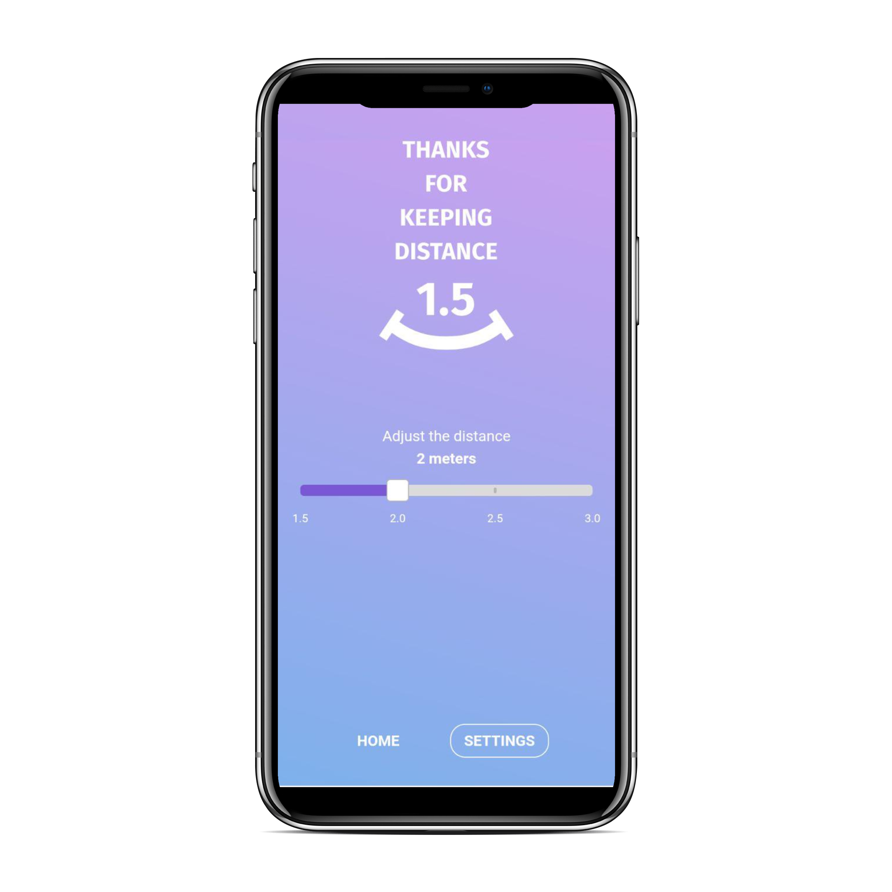
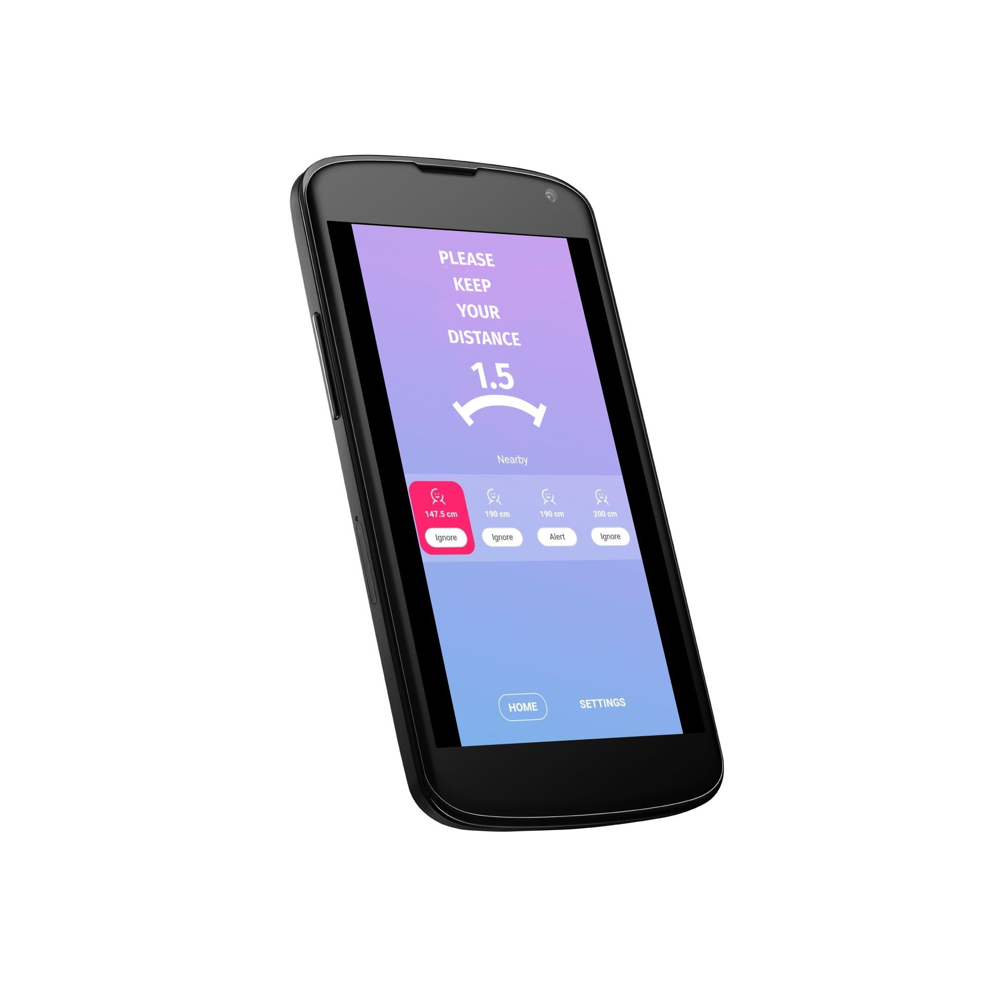
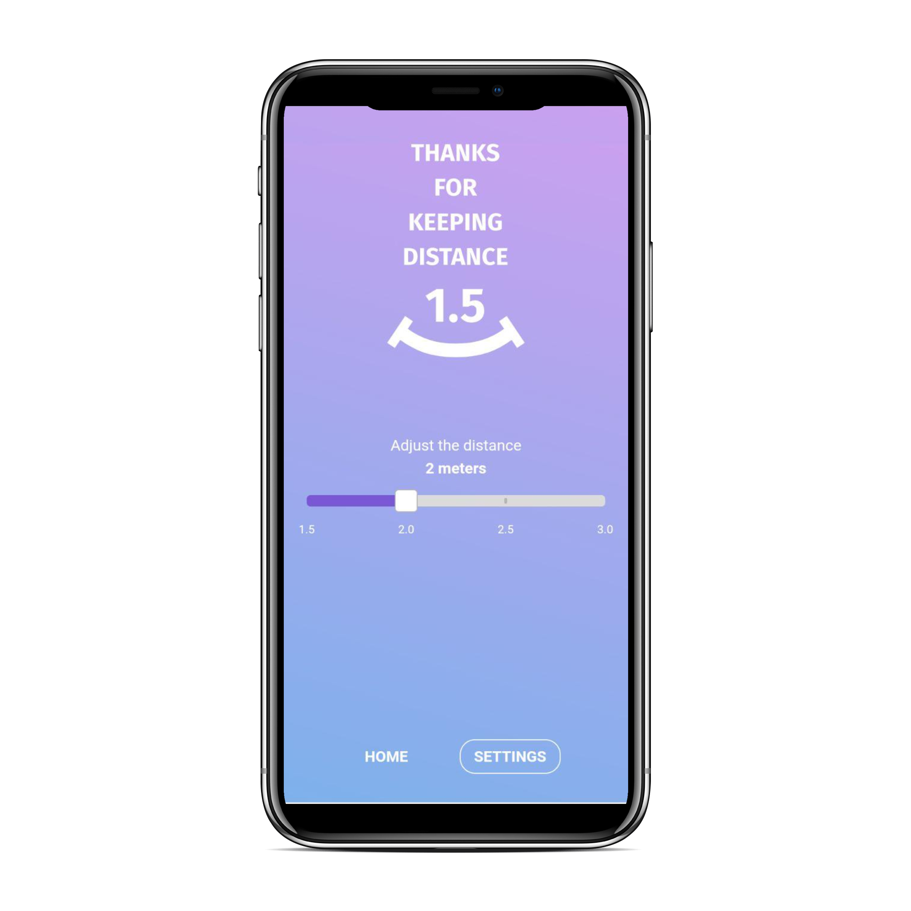
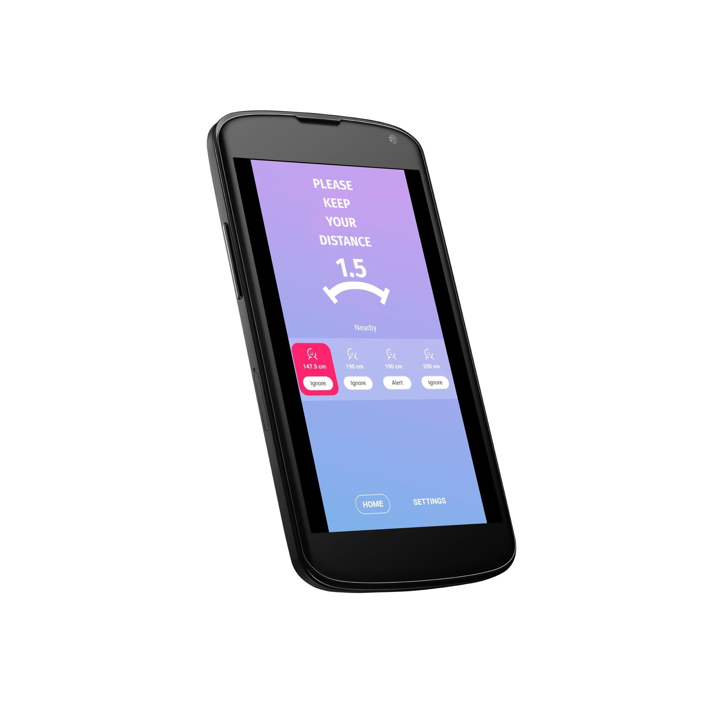
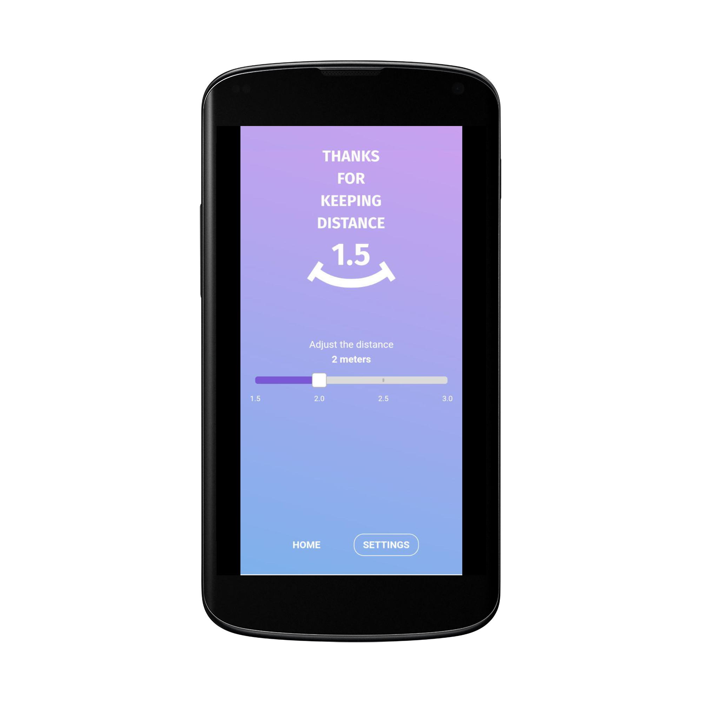
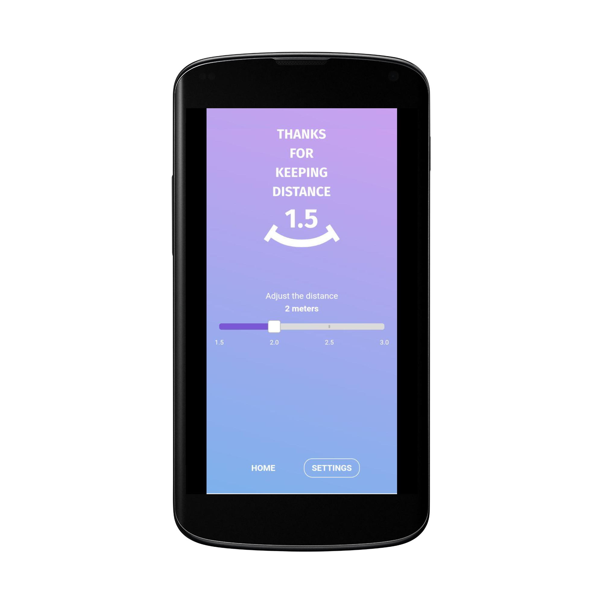

Introduction
LTO Network B.V. (“LTO Network”) is a limited liability corporation under Dutch law and is incorporated in Amsterdam, the Netherlands. LTO Network built the 1.5 app as a free to use app (“the App”). The App is provided at no cost and is intended for use as is. By downloading or using the App, these terms will automatically apply to you – you should make sure therefore that you read them carefully before using the App.
Functionality
The App will require Bluetooth turned ON. The App does not require an internet connection. The App requires Push Notifications to be turned on, on your phone. LTO Network cannot take responsibility for the App not working at full functionality if these requirements are not met.
The App establishes distances between phones by using their Bluetooth RSSI signal. The App will measure other phones within a radius of 1.5 meters as long as those phones have their Bluetooth turned ON. Those other phones need not have the App installed in order for the App to detect their presence.
By extension of this measurement, a person may be able to detect another person entering his/her sphere of 1.5 meters, as most people carry a phone with Bluetooth turned ON with them. Even though this may be used as an approximation, it will not be accurate in 100% of the cases.
For example:
- - the other person may not be carrying a phone with them
- - the other person may be carrying a phone with them, with Bluetooth turned OFF
- - the App may measure a phone or other Bluetooth device, which is not actually carried by a person (for example : a television)
Copyright
You’re not allowed to copy, or modify the App, any part of the App, or our trademarks in any way. You’re not allowed to attempt to extract the source code of the App, and you also shouldn’t try to translate the App into other languages, or make derivative versions. The App itself, and all the trade marks, copyright, database rights and other intellectual property rights related to it, still belong to LTO Network.
Development Rights
LTO Network is committed to ensuring that the App is as useful and efficient as possible. For that reason, we reserve the right to make changes to the App at any time and for any reason. We will never charge you for the App.
Responsibilities and Liabilities
The App is provided free of charge and intended as a means of support for “social distancing” between people. It in no way aims to be a substitute for instructions provided by government and health authorities or a user’s own common sense.
If at any time information provided by the App conflicts with information or instructions provided by health authorities, the government or a user’s own common sense, information provided by the App will yield and the former information will prevail. The user of the App is at all times responsible for his/her own health and of those around him/her.
LTO Network B.V. accepts no liability for any loss, direct or indirect, a user may experience as a result of relying wholly on the functionality of the App.
Roadmap
At some point, we may wish to update the app. The app is currently available on Android & iOS – the requirements for both systems (and for any additional systems we decide to extend the availability of the app to) may change, and you’ll need to download the updates if you want to keep using the app. LTO Network B.V. does not promise that it will always update the app so that it is relevant to you and/or works with the Android & iOS version that you have installed on your device. However, you promise to always accept updates to the application when offered to you, We may also wish to stop providing the app, and may terminate use of it at any time without giving notice of termination to you. Unless we tell you otherwise, upon any termination, (a) the rights and licenses granted to you in these terms will end; (b) you must stop using the app, and (if needed) delete it from your device.
Changes to This Terms and Conditions
We may update our Terms and Conditions from time to time. Thus, you are advised to review this page periodically for any changes. We will notify you of any changes by posting the new Terms and Conditions on this page. These changes are effective immediately after they are posted on this page.
Changes Us
If you have any questions or suggestions about our Privacy Policy, do not hesitate to contact us at support[at]ltonetwork[dot]com.
 



 
